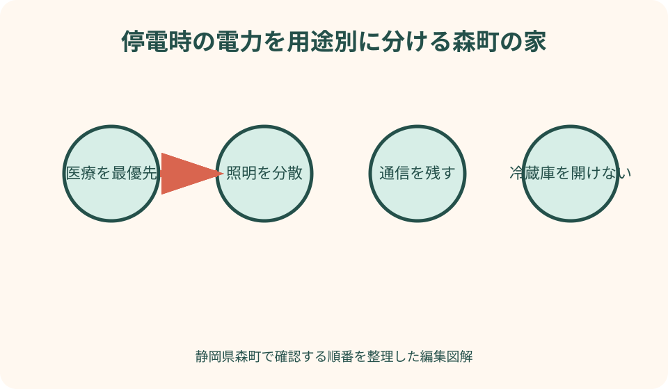
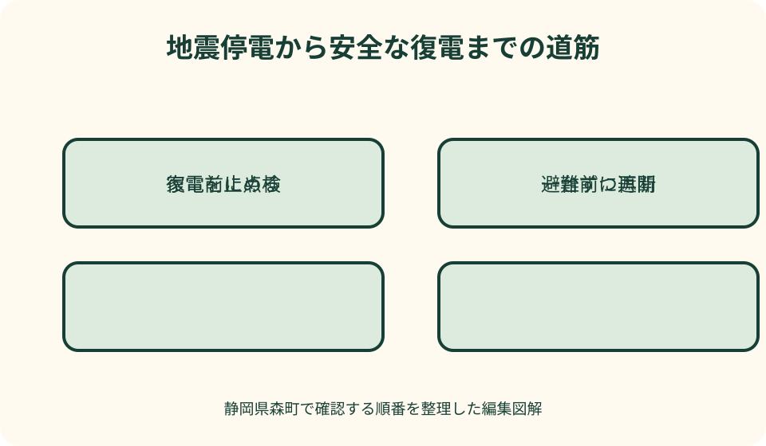

防災・家族の備え｜最終確認 2026-08-10
静岡県森町の停電対策｜冷蔵庫・照明・通信と復電時の安全確認
停電対策は、充電池を買うだけでは完成しません。照明、連絡、冷蔵食品、医療機器、給水、暑さ寒さでは必要な電力も代替方法も異なります。さらに地震後の復電では、壊れた家電への通電が火災を招くおそれがあります。平常時、停電中、復電前を分けて準備します。

編集イラスト結論：停電前・停電中・復電前の三枚に分けて備える
停電前の紙には、止まると命や健康に影響する機器、家族の連絡先、照明、情報手段を書きます。停電中の紙には、冷蔵庫を開ける回数、充電残量、室温、断水の有無を記します。復電前の紙には、ブレーカー、家電、ガス、浸水、異臭の確認欄を置きます。
優先順位の第一は生命維持に直結する医療機器です。森町公式も、感震ブレーカーで急に電気が止まる場合に備え、医療機器を使う家庭は停電対応のバッテリー等を備えるよう案内しています。容量や接続は機器提供元と医療職へ確認します。
第二は夜間の安全と情報です。停電時に作動する足元灯、懐中電灯、予備電池、携帯ラジオ、スマートフォンの充電手段を分散します。ろうそくは地震や余震で倒れて火災を招くため、照明の第一候補にしません。
第三は冷蔵・調理・快適性ですが、食品を守るために危険な発電機使用や通電を急がないことが前提です。冷蔵庫は扉の開閉を減らし、常温食から使い、食品の保存表示と庫内温度で食べられるかを判断します。
森町の一次情報で確認する停電と電気火災
森町公式の感震ブレーカー案内は、地震による電気火災には、揺れに伴う電気機器からの出火と、停電から復旧した際に起きる火災があると説明しています。不在時や避難時の通電も含めて考える必要があります。
同ページは、復電前にガス漏れと電気製品の安全を確認し、復電後に焦げたような臭いを感じたら直ちにブレーカーを遮断するよう案内しています。原因が分からなければ、電気の使用を見合わせます。
森町公式の自然災害案内は、台風時の停電へ備えて懐中電灯、予備電池、携帯ラジオを用意し、テレビ、ラジオ、町の同報無線などから正確な情報を得るよう呼びかけています。通信手段を一つへ絞らないことが要点です。
森町の令和8年3月改定地域防災計画は、海溝型巨大地震で広域的な停電や断水、交通インフラ被害、燃料を含む物資不足が生じ得ることに留意しています。家庭側も短時間で復旧する前提だけに頼らず準備します。
森町では令和8年6月から、条件に合う感震機能付住宅用分電盤の設置費補助を案内しています。購入や契約、設置工事に着手する前の申請が必要で、当年度予算がなくなれば受付終了となるため、必ず最新ページを確認します。
家で電気が必要な物を用途別に棚卸しする
家中のコンセントを見て、医療、照明、通信、給水、冷蔵、調理、冷暖房、仕事の八つへ機器を分けます。停電で困る順に並べ、製品の定格消費電力、起動時の注意、電池種類、使用可能時間を説明書から記録します。
モバイルバッテリーに容量表示があっても、全ての家電を動かせるわけではありません。出力端子、電圧、最大出力、変換損失、使用環境を確認します。医療機器には市販電源を自己判断で接続せず、供給元指定の方法を使います。
冷蔵庫、給水ポンプ、エアコンなどは、運転中の消費電力だけでなく始動時に大きな電力が必要な場合があります。ポータブル電源の広告上の容量だけを見て動作を断定せず、家電メーカーと電源メーカーの両方へ適合を確認します。
一覧には電気を使わない代替も書きます。照明なら電池式ライト、通信ならラジオと紙の連絡先、調理なら安全に使えるカセットこんろ、冷暖房なら衣類や日よけです。代替手段があれば電力を優先機器へ残せます。

医療機器・薬・介護用品は家庭備蓄と別に確認する
在宅酸素、人工呼吸器、吸引器、電動ベッドなどを使う家庭は、停電時間ごとの代替手段、予備電池の保管と交換、連絡先、避難判断を医療機関や機器提供事業者へ相談します。一般的な充電池の紹介だけで決めません。
冷蔵保管が必要な薬は、適正温度、停電時の移し方、保冷剤との接触可否を薬剤師やメーカーへ確認します。凍結すると使えない薬もあるため、保冷箱へ直接入れる自己流の方法は避けます。
電動の介護用品が止まった場合に手動操作できるか、説明書と介助者で確認します。ベッドやリフトを無理に動かして家族がけがをしないよう、停電訓練は専門職の助言を得て行います。
支援を求める連絡先は、医療機関、機器提供元、電力会社、家族、近隣支援者の役割を分けて紙にも残します。スマートフォンの電池が切れても、別の人が機器名と型式を伝えられる状態にします。
照明と通信は寝室・廊下・玄関へ分散する
懐中電灯を玄関の一か所だけに置くと、寝室から暗い廊下を歩いて取りに行くことになります。枕元、廊下、階段、玄関へ小型ライトを分散し、家具の転倒で取り出せない場所を避けます。
手で持つライトだけでなく、両手を空けられるヘッドライトや置き型照明を用意します。電池を入れたまま長期保管できるかは製品説明に従い、液漏れ、充電残量、点灯時間を半年ごとに確認します。
スマートフォンは画面の明るさ、位置情報、動画視聴などで電池を消費します。家族連絡と防災情報を優先し、省電力設定、充電ケーブル、端子の違いを確認します。家族全員が一つの充電器へ集中しないようにします。
携帯ラジオや電池式ラジオは通信障害時の補助になります。森町の公式防災情報、同報無線など受信経路を複数用意し、停電の原因や復旧見込みを未確認の投稿だけで判断しません。
冷蔵庫は開閉を減らし、食品の温度と表示で判断する
停電したら、必要な物を考えずに何度も扉を開けないようにします。農林水産省は、冷蔵庫の扉を長時間開けたり繰り返し開閉したりすると、外気で庫内温度が上がると説明しています。家族で開閉担当を一人に決める方法があります。
平常時から庫内温度計を置き、停電開始時刻と温度を記録します。厚生労働省は通常時の目安として冷蔵庫10℃以下、冷凍庫マイナス15℃以下を示しています。停電時も時間だけで安全を断定せず、温度と食品表示を確認します。
「要冷蔵」「10℃以下で保存」などの表示がある食品は、保存条件を守る必要があります。見た目やにおいだけで安全と決めず、温度管理ができなかった食品、膨張や異臭がある食品は食べません。迷う食品を味見して確かめることも避けます。
冷凍食品が解けた場合の再冷凍可否は食品ごとに異なります。肉や魚の汁が他の食品へ触れないよう袋や容器で分け、乳幼児、高齢者、体調の弱い人へ不確かな食品を回さないようにします。
冷蔵庫の中身を食べる順番まで決める
停電前から常温保存できる食品を備え、冷蔵品を急いで全て調理しなければならない状態を避けます。停電直後は火気や水道の安全が分からないため、調理不要の食品を最初に使えるよう別箱へ置きます。
冷蔵庫を開ける前に、扉へ貼った在庫表を見て取り出す物を決めます。生鮮食品、作り置き、開封済み食品、未開封飲料を分け、温度管理が必要な順に確認します。在庫表は買物日に更新します。
冷凍庫は凍結した食品が互いを冷やすため、平常時に詰め方を整えます。ただし詰め過ぎで扉が閉まりにくい状態や、停電後に中身を探して長く開ける状態は避けます。保冷剤の場所も決めます。
復電したから食品が元の安全状態へ戻るわけではありません。停電中に温度が上がった食品は、再び冷えた見た目だけで判断せず、保存表示、停電時間、温度記録、自治体や食品メーカーの案内を合わせて処分を決めます。
給水・トイレ・調理は停電と同時に止まる場合がある
建物の給水ポンプや井戸ポンプを電気で動かす住宅では、停電が断水につながります。自宅の給水方式を確認し、飲料水と生活用水、携帯トイレを別に備えます。蛇口から水が出るから長く続くとも限りません。
浄化槽の送風機も電気を使うため、長い停電では管理先へ確認が必要です。水洗トイレを流せるかは、上水だけでなく排水先の状態にも関わります。地震後は町や管理者の使用案内を待ちます。
カセットこんろは停電時の調理手段になりますが、換気できない場所、可燃物の近く、狭い場所で使いません。二台を並べたり、こんろを覆う大きな鉄板を使ったりせず、製品説明を守ります。
電気ケトルや電子レンジをポータブル電源で使う場合は消費電力が大きく、他の重要機器の電力を失うことがあります。温かい食事より、医療・照明・通信を先に確保し、常温で食べられる備蓄を組み合わせます。
携帯発電機を屋内や車庫で使わない
携帯発電機は燃料を燃やすため、一酸化炭素中毒の危険があります。経済産業省は屋内で絶対に使わず、屋外の風通しがよい場所で使用するよう注意しています。窓を開けた室内、車庫、物置も安全な屋外とはみなしません。
排気が開いた窓、換気口、隣家へ入らない位置を選び、雨に濡らさず、製品が求める離隔を確保します。屋外でも風向きや建物配置で排気が戻るため、設置環境を販売店や専門家へ確認します。
発電機から家庭のコンセントへ直接逆向きに給電する行為は、配線や作業者へ重大な危険を及ぼします。住宅へ接続する設備が必要な場合は、資格のある電気工事事業者へ設計と施工を依頼します。
燃料は種類、保存量、容器、保管場所に制限と危険があります。古い燃料を使う、居室へ置く、運転中に給油するなど自己流の扱いをせず、製品説明と法令、消防の案内を確認します。
地震後に避難するときは通電火災を防ぐ
地震の揺れが収まり、安全に動ける場合は、電気製品の電源を切り、プラグを抜きます。避難に時間の余裕があるときは、分電盤のブレーカーを切ります。火や煙がある、建物が危険な場合は操作より避難を優先します。
停電中に倒れた暖房器具へ衣類が重なっていると、留守中の復電で加熱する可能性があります。家具固定と火気周辺の片付けを平常時から行い、不在時の通電を感震ブレーカーで減らす方法も検討します。
感震ブレーカーは揺れを感知して電気を止める装置ですが、急に照明や医療機器も止まる場合があります。森町公式が示すとおり、足元灯、懐中電灯、医療機器用の予備電源と一緒に導入します。
蓄電池や太陽光発電がある住宅は、主ブレーカーを切っても一部回路へ給電される仕様があります。機器ごとの停電・地震時の操作を施工者へ確認し、分電盤へ簡潔な手順と緊急連絡先を掲示します。
復電前は一台ずつ損傷と異臭を確認する
復電の知らせを受けても、すぐ全ての家電を動かしません。まずガス漏れ、浸水、壁や天井の損傷、電源コードの切れやつぶれ、プラグの変形、家電の転倒を目視します。濡れた分電盤や機器には触れません。
安全が確認できた範囲で、分電盤と機器の説明に従って復旧します。経済産業省は、機器の損傷や水没、動作異常を確認し、電源プラグを一台ずつ差して様子を見るよう案内しています。
焦げた臭い、異音、煙、異常な発熱があれば、直ちにブレーカーを遮断します。原因が分からないまま再投入を繰り返さず、電気工事事業者や電力会社、消防へ状況に応じて連絡します。火災なら119番です。
冷蔵庫や給水ポンプが再起動しても、正常運転かを確認します。一度に大きな家電を複数動かすと原因を切り分けにくいため、必要な機器から順にします。家族が勝手に別室の機器を入れないよう担当を一人に決めます。

森町の感震ブレーカー補助は契約前に確認する
森町の補助対象は、町公式が定める規格に適合し、認定を受けた感震機能付住宅用分電盤です。簡易型やコンセント型を買えば同じ補助を受けられるとは限りません。型番、認定状況、仕様が分かる資料を用意します。
町公式の手順では、設置内容と見積書を確認し、購入・設置工事への着手前、契約がある場合は契約前に申請書類を提出します。交付決定通知を受けてから設置を進めます。先に注文して対象外にならないよう順番を守ります。
当年度の予算がなくなり次第、受付終了と案内されています。補助率、上限、対象住宅、申請者要件、必要書類、完了期限は更新される可能性があるため、施工店との契約前に危機管理課へ最新情報を確認します。
感震ブレーカーを設置しても、配線の劣化、家電の転倒、復電後の確認が不要になるわけではありません。家具固定、住宅用火災警報器、照明、避難動線と組み合わせ、定期的に作動状態を点検します。
良い点：優先順位が決まると電池と電力を残せる
停電時の機器を一覧にする良い点は、電力を本当に必要な用途へ残せることです。医療、足元照明、連絡を先にし、動画視聴、調理、快適性を後へ置くと、限られた電池を家族で奪い合わずに済みます。
冷蔵庫の在庫と温度を記録すれば、扉を何度も開けて中身を探す行動を減らせます。食品表示と温度を基準にし、停電時間だけで一律判断しない習慣も作れます。
感震ブレーカーと避難前の遮断手順を用意すると、不在時や避難中に壊れた家電へ通電する危険を下げられます。森町の補助制度は、条件に合う住宅用分電盤を専門施工で導入するきっかけになります。
照明とラジオを分散すれば、家具が倒れて一か所へ行けなくても情報を得られます。家族の居場所ごとに小さな備えを置くことは、夜間の転倒や階段事故を防ぐ助けにもなります。
注文したい点：電源容量だけでは生活継続を判断できない
注文したい点は、大容量の電源を買えば全て解決するように見えやすいことです。機器の起動電力、接続、充電時間、保管温度、電池寿命が合わなければ使えません。購入前に動かしたい機器を特定します。
冷蔵庫が冷たい、食品に異臭がないという感覚だけでは食中毒の危険を判断できません。庫内温度、保存表示、停電中の開閉、食品の状態を合わせ、不確かな物を無理に食べない判断が必要です。
感震ブレーカーは電気火災を防ぐ有効な手段ですが、医療機器や夜間照明まで急に止まる問題があります。電気を止める備えと、止まった後に命と移動を守る備えを必ず同時に整えます。
停電の範囲や復旧時間は災害ごとに違います。近所が点灯しても自宅設備だけ故障している場合があり、自宅だけで復旧を試さず、電力会社の情報と分電盤の状態を確認します。
代案・結論：電源を増やせない家庭は非電化の代替を先に置く
ポータブル電源をすぐ買えない場合は、電池式ライト、携帯ラジオ、紙の連絡先、常温食品、飲料水、携帯トイレ、季節に合う衣類を優先します。電気を使わなくても安全を保てる物から整えます。
スマートフォン用の小型充電池しかない場合は、家族連絡と町の防災情報へ用途を限定します。充電残量を月1回確認し、ケーブルと端子を同じ袋へ入れます。古く膨らんだ電池は使用せず、適切に回収へ出します。
冷蔵食品を守り切れない場合に備え、平常時から冷蔵庫へ詰め過ぎず、常温保存食を回転させます。停電したら冷蔵庫を開けずに食べられる最初の一食を別箱へ用意します。
結論として、今日行うのは家で止まると困る機器を八用途へ分け、最優先の三つと非電化の代替を書き出すことです。次に寝室へライトを置き、復電前チェックを分電盤の近くへ掲示します。
家族に残す停電台帳
停電台帳には、機器名、型式、消費電力、使用場所、優先度、代替手段、電池種類、担当者を書きます。医療機器は提供元と緊急連絡先も入れ、一般家電と分けて目立たせます。
分電盤の写真には、主ブレーカーと各回路の表示を写します。どの回路が冷蔵庫、医療機器、給水ポンプか分かるよう電気工事事業者へ確認し、家族が推測で操作しないようにします。
冷蔵庫には停電開始時刻、庫内温度、開閉回数を記録する紙を用意します。食品の購入日と保存表示も普段から整理し、復電後の処分判断を家族の記憶だけへ任せません。
年2回、照明、ラジオ、充電池、感震ブレーカー、発電機を製品説明に従って点検します。家族構成、医療機器、住宅設備が変わったときは定期日を待たず更新します。
大石の視点：停電手順は住まいの設備台帳になる
大石の視点では、停電に備えて分電盤、給水ポンプ、浄化槽、太陽光発電、蓄電池を調べる作業は、住まいの設備台帳づくりそのものです。どの設備を誰が管理しているかまで記録します。
森町の実家を遠方から管理している家族は、主ブレーカーの場所、契約している電気工事事業者、冷蔵庫の中身、停電時に見回る人を共有します。避難中の家族へ「戻って確認して」と頼むことは避けます。
空き家や相続した住宅でも、通電契約が残っていれば電気火災の確認は必要です。道路、境界、農地、登記名義と一緒に、電力契約、分電盤、配線の点検歴を実家カルテへ残します。
私は、高価な電源機器の購入を先に勧めるより、命に必要な電気と止めるべき電気を分けたいと考えます。住み続ける、貸す、売る、管理する、どの場合も設備の状態と確認日が分かれば、次の判断がしやすくなります。
まとめ：電気を確保する準備と、安全に止める準備を両立する
静岡県森町の停電対策では、医療機器、足元照明、通信、防災情報を最優先にし、冷蔵、調理、冷暖房は電気を使わない代替も用意します。
停電中は冷蔵庫の開閉を減らし、食品表示と庫内温度で安全を判断します。復電して再び冷えたから安全とは考えず、温度管理が不明な食品を無理に食べません。
地震後に安全と時間の余裕があれば、家電を切り、プラグを抜き、避難前に分電盤を遮断します。復電前はガス漏れ、浸水、コード、家電を確認し、焦げ臭さや異常があれば再通電しません。
まず寝室と玄関へライトを置き、家族が必要な電気を一覧にしてください。感震ブレーカーを検討する場合は、医療と照明の代替を整え、契約前に森町の最新補助条件を確認します。
公式情報・確認先
掲載内容は次の一次情報を基礎に整理しました。営業、料金、催し、交通は変わるため、出発前または手続き前にリンク先で最新情報を確認してください。
- 感震ブレーカーを設置し、地震における火災を防ぎましょう（静岡県森町、2026-08-10確認）
- 感震ブレーカー設置費補助制度のご案内（静岡県森町、2026-08-10確認）
- 自然災害（台風・集中豪雨・地震）（静岡県森町、2026-08-10確認）
- 森町地域防災計画（静岡県森町、2026-08-10確認）
- 地震に伴う製品事故に注意（経済産業省関東経済産業局、2026-08-10確認）
- 冷蔵庫のかしこい使い方（農林水産省、2026-08-10確認）
- 災害時の食中毒予防のために（厚生労働省、2026-08-10確認）